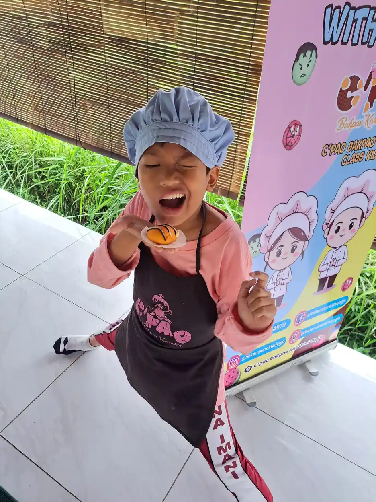
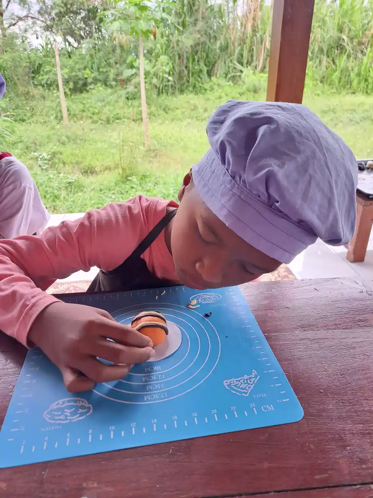
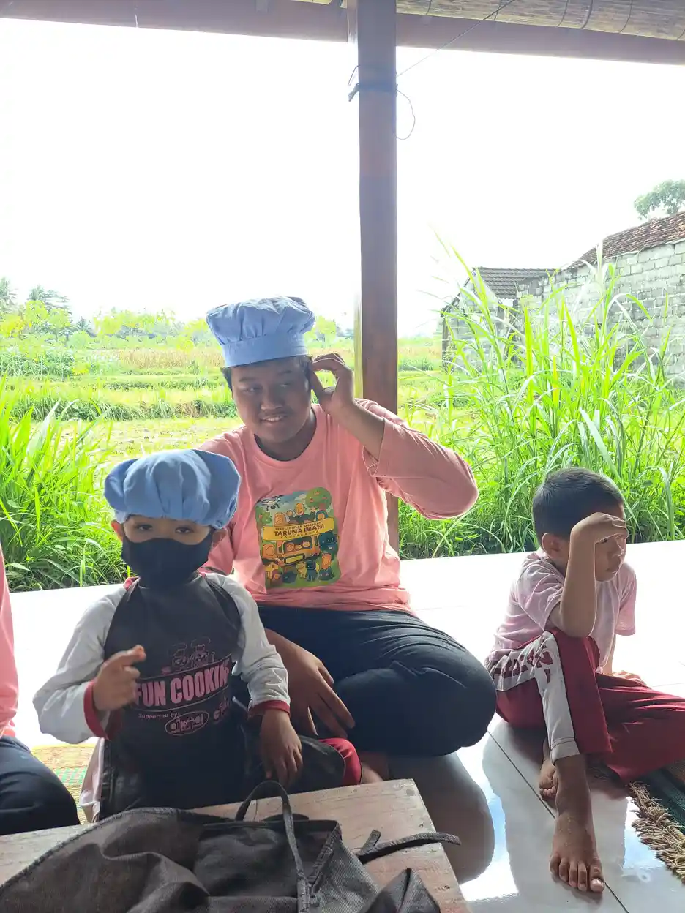

Terapi bermain adalah metode terapi yang menggunakan permainan sebagai media utama untuk membantu anak mengekspresikan perasaan, memproses pengalaman emosional, dan mengembangkan berbagai keterampilan penting. Bagi anak-anak, bermain bukan sekadar hiburan, melainkan cara alami mereka untuk berkomunikasi, belajar, dan memahami dunia di sekitar mereka. Ketika kata-kata belum mampu menjadi jembatan ekspresi, permainan hadir sebagai bahasa universal yang dipahami oleh setiap anak.
Di Yayasan Ukhuwah Kaffah Amanatullah (YUKA), kami menyaksikan secara langsung bagaimana kekuatan bermain mampu mengubah kehidupan anak-anak, termasuk anak berkebutuhan khusus (ABK). Melalui Sekolah Inklusi Taruna Imani di Sleman, Yogyakarta, kami menerapkan berbagai pendekatan terapi bermain yang dirancang untuk membantu setiap anak berkembang sesuai potensinya, dalam suasana yang hangat, aman, dan menyenangkan.
Artikel ini akan membahas secara mendalam tentang apa itu terapi bermain, berbagai jenisnya, manfaat yang bisa diperoleh, serta bagaimana penerapannya untuk anak berkebutuhan khusus. Kami juga akan membagikan pengalaman nyata dari program terapi bermain di YUKA dan aktivitas-aktivitas sederhana yang bisa dilakukan orang tua di rumah.
Daftar Isi
Apa Itu Terapi Bermain (Play Therapy)?
Secara definisi, terapi bermain (play therapy) adalah pendekatan terapeutik yang terstruktur dan berbasis teori, di mana permainan digunakan sebagai media utama komunikasi dan intervensi. Dalam terapi ini, seorang terapis terlatih membantu anak mengeksplorasi dan mengekspresikan pikiran serta perasaannya melalui aktivitas bermain, sehingga anak dapat mengatasi tantangan emosional, perilaku, dan perkembangan yang sedang dihadapinya.
Berbeda dengan bermain biasa, terapi bermain memiliki tujuan terapeutik yang jelas dan dilakukan dalam lingkungan yang dirancang khusus. Ruang terapi bermain (playroom) dilengkapi dengan berbagai jenis mainan dan material yang dipilih secara sengaja untuk memfasilitasi ekspresi diri anak, termasuk boneka, figur miniatur, alat gambar, pasir, air, balok konstruksi, dan mainan rumah-rumahan.
Sejarah Singkat Terapi Bermain
Konsep terapi bermain memiliki akar sejarah yang panjang. Pada awal abad ke-20, Sigmund Freud menjadi salah satu tokoh pertama yang menggunakan bermain sebagai alat untuk memahami dunia batin anak. Ia mengamati seorang anak bernama "Little Hans" dan mencatat bagaimana permainan anak tersebut merefleksikan kecemasan dan konflik emosional yang dialaminya.
Melanie Klein dan Anna Freud kemudian mengembangkan pendekatan ini lebih lanjut pada tahun 1920-an dan 1930-an. Klein menggunakan bermain sebagai pengganti asosiasi bebas dalam psikoanalisis anak, sementara Anna Freud menekankan pentingnya membangun hubungan terapeutik dengan anak sebelum melakukan interpretasi.
Pada tahun 1947, Virginia Axline memperkenalkan pendekatan terapi bermain non-direktif (child-centered play therapy) yang menjadi salah satu pendekatan paling berpengaruh hingga saat ini. Axline meyakini bahwa setiap anak memiliki kapasitas bawaan untuk tumbuh dan berkembang secara positif jika diberikan lingkungan yang mendukung dan penerimaan tanpa syarat.
Saat ini, terapi bermain telah berkembang menjadi bidang profesional yang diakui secara internasional. Association for Play Therapy (APT) yang didirikan pada tahun 1982 menetapkan standar pelatihan dan sertifikasi bagi praktisi terapi bermain di seluruh dunia. Lebih dari 150 model terapi bermain telah dikembangkan dan diteliti efektivitasnya untuk berbagai kondisi anak.
Tahukah Anda?
Penelitian meta-analisis yang dipublikasikan dalam jurnal Professional Psychology: Research and Practice menunjukkan bahwa terapi bermain efektif untuk berbagai masalah anak, dengan efek terapi yang sebanding atau bahkan lebih baik dibandingkan pendekatan non-bermain untuk populasi anak. Terapi bermain terbukti efektif lintas usia, jenis kelamin, dan latar belakang budaya.
Jenis-Jenis Terapi Bermain
Terapi bermain memiliki berbagai jenis dan pendekatan yang masing-masing memiliki karakteristik, tujuan, dan metode yang berbeda. Pemilihan jenis terapi bermain tergantung pada kondisi, kebutuhan, dan usia anak. Berikut adalah jenis-jenis terapi bermain yang paling umum digunakan:
1. Terapi Bermain Direktif (Directive Play Therapy)
Dalam pendekatan direktif, terapis mengambil peran aktif dalam mengarahkan kegiatan bermain anak. Terapis memilih jenis permainan, menetapkan tema, dan memberikan instruksi tertentu yang disesuaikan dengan tujuan terapeutik. Pendekatan ini cocok untuk anak yang membutuhkan struktur lebih jelas atau yang menghadapi masalah spesifik yang perlu ditangani secara langsung.
Contoh penerapan terapi bermain direktif: terapis meminta anak menggambar keluarganya untuk mengeksplorasi dinamika keluarga, atau mengajak anak bermain peran (role-play) untuk melatih keterampilan sosial dalam situasi tertentu. Pendekatan ini sering digunakan dalam terapi ABA (Applied Behavior Analysis) yang menerapkan prinsip pembelajaran terstruktur.
2. Terapi Bermain Non-Direktif (Non-Directive / Child-Centered Play Therapy)
Pendekatan non-direktif, yang dikembangkan oleh Virginia Axline, memberikan kebebasan penuh kepada anak untuk memilih mainan dan mengarahkan permainannya sendiri. Terapis berperan sebagai pengamat yang penuh empati, merefleksikan perasaan anak, dan menciptakan suasana penerimaan tanpa syarat. Filosofi dasarnya adalah bahwa anak memiliki kemampuan bawaan untuk menyelesaikan masalahnya sendiri jika diberikan lingkungan yang aman dan mendukung.
Dalam sesi non-direktif, terapis tidak memberikan penilaian, tidak mengarahkan permainan, dan tidak memberikan interpretasi langsung. Terapis hadir sepenuhnya, mengikuti alur permainan anak, dan merefleksikan emosi yang ditampilkan anak melalui bermain. Pendekatan ini sangat efektif untuk anak yang mengalami trauma, kecemasan, atau kesulitan emosional.
3. Sand Play Therapy (Terapi Bermain Pasir)
Sand play therapy menggunakan bak pasir dan koleksi figur miniatur sebagai media ekspresi. Anak dibebaskan untuk membuat "dunia" mereka sendiri di dalam bak pasir menggunakan berbagai figur seperti manusia, hewan, bangunan, kendaraan, pohon, dan benda-benda alam. Terapis mengamati tema, pola, dan simbol yang muncul dalam kreasi anak sebagai jendela ke dunia batin mereka.
Metode ini dikembangkan oleh Dora Kalff berdasarkan teori Carl Jung dan sangat efektif untuk anak yang kesulitan mengekspresikan perasaan secara verbal. Pengalaman taktil dari bermain pasir juga memberikan efek menenangkan yang membantu anak merasa rileks dan aman, sehingga lebih mudah mengeksplorasi perasaan-perasaan yang sulit. Pendekatan sensori seperti ini sejalan dengan prinsip terapi sensori integrasi yang menggunakan stimulasi sensoris untuk mendukung perkembangan anak.
4. Art Therapy (Terapi Seni)
Art therapy menggabungkan unsur seni visual seperti menggambar, melukis, memahat, dan membuat kolase dengan prinsip-prinsip psikoterapi. Melalui proses kreatif, anak dapat mengekspresikan perasaan dan pengalaman yang mungkin sulit diungkapkan dengan kata-kata. Hasil karya seni anak juga menjadi bahan diskusi yang kaya antara terapis dan anak.
Keunggulan art therapy terletak pada fleksibilitasnya. Anak tidak perlu memiliki bakat seni untuk mendapatkan manfaat dari metode ini. Yang penting bukanlah hasil akhir karya seni, melainkan proses kreatif yang dialami anak selama berkarya. Aktivitas seni juga melatih kemampuan motorik halus anak secara alami.
5. Bibliotherapy (Terapi Cerita)
Bibliotherapy menggunakan buku cerita, dongeng, atau narasi sebagai media terapeutik. Terapis memilih cerita yang berkaitan dengan masalah yang dihadapi anak, lalu membacakannya bersama. Melalui karakter dan alur cerita, anak dapat memproyeksikan perasaannya, menemukan solusi alternatif, dan mengembangkan pemahaman baru tentang situasi yang dihadapinya.
Setelah membaca cerita, terapis dan anak berdiskusi tentang karakter, perasaan, dan pilihan-pilihan yang dibuat dalam cerita. Anak juga bisa diajak membuat cerita atau ending alternatif yang mencerminkan harapan dan perspektif mereka sendiri.
6. Music Therapy (Terapi Musik)
Terapi musik menggunakan elemen-elemen musik seperti ritme, melodi, dan harmoni untuk mencapai tujuan terapeutik. Anak bisa diajak bernyanyi, memainkan alat musik sederhana, bergerak mengikuti irama, atau mendengarkan musik. Terapi musik terbukti efektif untuk meningkatkan komunikasi, regulasi emosi, keterampilan sosial, dan koordinasi motorik pada anak.
7. Filial Therapy (Terapi Bermain Berbasis Keluarga)
Filial therapy merupakan pendekatan unik yang melatih orang tua untuk menjadi "agen terapeutik" bagi anak mereka sendiri. Terapis mengajarkan prinsip-prinsip terapi bermain non-direktif kepada orang tua, lalu orang tua mempraktikkannya dalam sesi bermain khusus bersama anak di rumah. Pendekatan ini memperkuat ikatan emosional antara orang tua dan anak, sekaligus membekali orang tua dengan keterampilan komunikasi yang lebih baik.

Manfaat Terapi Bermain untuk Anak
Terapi bermain menawarkan berbagai manfaat yang luas dan mendalam bagi perkembangan anak. Berbagai penelitian ilmiah telah membuktikan efektivitas terapi bermain dalam membantu anak mengatasi tantangan emosional, perilaku, dan perkembangan. Berikut adalah manfaat-manfaat utama terapi bermain:
Manfaat Emosional
- Ekspresi emosi yang sehat: Terapi bermain menyediakan ruang aman bagi anak untuk mengekspresikan perasaan seperti marah, sedih, takut, dan cemas tanpa rasa takut dihakimi. Melalui bermain, anak belajar bahwa semua perasaan mereka valid dan boleh dirasakan.
- Pengelolaan kecemasan: Bermain membantu anak memproses pengalaman yang membuatnya cemas. Dengan mengulang-ulang situasi yang menakutkan dalam konteks bermain, anak secara bertahap mengembangkan rasa kendali dan mengurangi kecemasan.
- Pemulihan dari trauma: Bagi anak yang mengalami peristiwa traumatis, terapi bermain memberikan cara yang aman untuk memproses dan mengintegrasikan pengalaman tersebut tanpa harus menceritakannya secara verbal.
- Peningkatan kepercayaan diri: Ketika anak berhasil menyelesaikan tantangan dalam bermain, mereka mengembangkan rasa percaya diri dan keyakinan terhadap kemampuan mereka sendiri. Pengalaman keberhasilan ini menjadi fondasi untuk menghadapi tantangan di kehidupan nyata.
Manfaat Sosial
- Keterampilan komunikasi: Terapi bermain membantu anak mengembangkan kemampuan berkomunikasi, baik secara verbal maupun non-verbal. Anak belajar menyampaikan keinginan, kebutuhan, dan perasaan mereka dengan cara yang lebih efektif.
- Kemampuan berempati: Melalui bermain peran dan berinteraksi dengan terapis, anak belajar memahami perspektif orang lain dan mengembangkan rasa empati. Mereka belajar bahwa orang lain juga memiliki perasaan dan kebutuhan yang perlu dihormati.
- Keterampilan kerja sama: Dalam terapi bermain kelompok, anak belajar berbagi, bergiliran, bernegosiasi, dan bekerja sama dengan teman sebaya. Keterampilan ini sangat penting untuk keberhasilan mereka di lingkungan sekolah dan sosial.
- Pemahaman aturan sosial: Bermain memberi anak kesempatan untuk mempraktikkan aturan sosial dalam konteks yang aman dan menyenangkan, seperti menunggu giliran, meminta izin, dan menghormati batasan orang lain.
Manfaat Kognitif
- Kemampuan pemecahan masalah: Bermain secara alami menghadapkan anak pada berbagai tantangan yang harus mereka selesaikan. Proses ini melatih kemampuan berpikir kritis, kreativitas, dan fleksibilitas kognitif.
- Peningkatan konsentrasi: Ketika anak terlibat dalam permainan yang menarik bagi mereka, mereka secara alami melatih kemampuan fokus dan perhatian. Ini sangat bermanfaat bagi anak yang mengalami tantangan dalam konsentrasi.
- Pengembangan bahasa: Bermain menstimulasi perkembangan bahasa anak melalui narasi, dialog, dan interaksi yang terjadi selama bermain. Anak memperkaya kosakata dan kemampuan bercerita mereka secara alami.
- Imajinasi dan kreativitas: Terapi bermain mendorong anak untuk menggunakan imajinasi mereka secara bebas, yang merupakan fondasi penting bagi kreativitas dan kemampuan berpikir inovatif di masa depan.
Manfaat Fisik dan Motorik
- Pengembangan motorik halus: Banyak aktivitas dalam terapi bermain, seperti menggambar, membentuk plastisin, dan menyusun balok, melatih koordinasi otot-otot kecil pada tangan dan jari anak.
- Pengembangan motorik kasar: Aktivitas bermain yang melibatkan gerakan tubuh besar seperti melompat, berlari, dan memanjat membantu mengembangkan kekuatan, keseimbangan, dan koordinasi tubuh anak.
- Integrasi sensoris: Bermain dengan berbagai tekstur, suara, dan material memberikan stimulasi sensoris yang penting untuk perkembangan sistem saraf anak dan kemampuan memproses informasi dari lingkungan.
"Bermain adalah pekerjaan anak. Melalui bermain, anak tidak hanya belajar tentang dunia di sekitar mereka, tetapi juga tentang diri mereka sendiri. Terapi bermain memanfaatkan kekuatan alami ini untuk membantu anak menyembuhkan luka emosional dan mengembangkan potensi terbaik mereka."
Terapi Bermain untuk Anak Berkebutuhan Khusus
Terapi bermain memiliki peran yang sangat penting dalam mendukung perkembangan anak berkebutuhan khusus (ABK). Setiap kondisi memiliki tantangan dan kebutuhan yang unik, dan terapi bermain dapat disesuaikan untuk menjawab kebutuhan spesifik setiap anak. Berikut adalah penerapan terapi bermain untuk berbagai kondisi ABK:
Terapi Bermain untuk Anak dengan Autisme
Anak dengan gangguan spektrum autisme sering mengalami tantangan dalam komunikasi sosial, interaksi dengan orang lain, dan fleksibilitas perilaku. Terapi bermain dapat membantu anak autisme dalam beberapa aspek penting:
- Mengembangkan bermain simbolik: Banyak anak autisme yang kesulitan dalam bermain pura-pura atau bermain imajinatif. Terapi bermain secara bertahap mengajarkan keterampilan ini melalui modeling dan scaffolding yang sabar.
- Meningkatkan kontak mata dan joint attention: Melalui permainan yang menarik, terapis dapat secara alami mendorong anak untuk melakukan kontak mata dan berbagi perhatian terhadap objek atau aktivitas bersama.
- Melatih keterampilan sosial dasar: Bermain peran dan permainan terstruktur membantu anak autisme mempelajari aturan sosial seperti bergiliran, berbagi, dan merespons emosi orang lain.
- Mengurangi perilaku repetitif: Dengan menyalurkan kebutuhan sensoris anak melalui bermain yang sesuai, perilaku repetitif yang tidak fungsional dapat berkurang secara bertahap.
Pendekatan terapi ABA sering diintegrasikan dengan terapi bermain untuk anak autisme, di mana prinsip penguatan positif diterapkan dalam konteks bermain yang menyenangkan. Kombinasi ini terbukti lebih efektif dibandingkan pendekatan yang kaku dan tidak melibatkan elemen bermain.
Terapi Bermain untuk Anak dengan ADHD
Anak dengan ADHD (Attention Deficit Hyperactivity Disorder) sering mengalami kesulitan dalam mempertahankan perhatian, mengontrol impulsivitas, dan mengelola tingkat aktivitas mereka. Terapi bermain memberikan manfaat khusus bagi anak ADHD:
- Melatih kontrol diri: Permainan yang memiliki aturan membantu anak ADHD belajar mengendalikan impuls, menunggu giliran, dan mengikuti instruksi secara bertahap.
- Menyalurkan energi secara positif: Aktivitas bermain yang aktif dan dinamis memberikan saluran yang sehat bagi energi berlebih yang dimiliki anak ADHD, sehingga mereka lebih mudah fokus setelahnya.
- Meningkatkan kemampuan fokus: Ketika anak terlibat dalam permainan yang sesuai minat mereka, mereka secara alami melatih kemampuan berkonsentrasi dalam durasi yang semakin lama.
- Mengelola emosi: Anak ADHD sering mengalami kesulitan regulasi emosi. Terapi bermain membantu mereka mengenali, memahami, dan mengelola emosi dengan cara yang lebih adaptif.

Terapi Bermain untuk Anak dengan Keterlambatan Perkembangan
Anak yang mengalami keterlambatan perkembangan global, termasuk keterlambatan bahasa, motorik, dan kognitif, sangat terbantu oleh terapi bermain. Permainan yang dirancang sesuai tingkat perkembangan anak memberikan stimulasi yang optimal tanpa tekanan berlebihan. Terapi bermain untuk kelompok ini sering dipadukan dengan terapi okupasi untuk hasil yang lebih komprehensif.
Terapi Bermain untuk Anak dengan Gangguan Kecemasan
Anak yang mengalami kecemasan berlebihan, fobia, atau gangguan kecemasan sosial mendapatkan manfaat besar dari terapi bermain. Dalam ruang bermain yang aman, anak dapat mengeksplorasi sumber kecemasannya secara bertahap tanpa merasa terancam. Teknik desensitisasi melalui bermain membantu anak menghadapi ketakutannya dengan cara yang tidak menakutkan dan bisa dikendalikan.
Prinsip Penting dalam Terapi Bermain untuk ABK
Ada beberapa prinsip penting yang harus diperhatikan ketika menerapkan terapi bermain untuk anak berkebutuhan khusus:
- Individualisasi: Setiap program terapi bermain harus disesuaikan dengan kebutuhan, kekuatan, dan minat spesifik setiap anak. Tidak ada pendekatan "satu ukuran untuk semua".
- Pendekatan bertahap: Perkenalkan aktivitas dan tantangan secara bertahap, dimulai dari yang mudah dan perlahan meningkat sesuai kemampuan anak.
- Konsistensi: Lakukan terapi bermain secara konsisten dan teratur untuk mendapatkan hasil yang optimal.
- Kolaborasi: Libatkan orang tua, guru, dan profesional lain dalam merancang dan menjalankan program terapi bermain.
- Dokumentasi: Catat perkembangan anak secara teratur untuk mengevaluasi efektivitas terapi dan melakukan penyesuaian yang diperlukan.
Proses dan Tahapan Terapi Bermain
Terapi bermain yang profesional mengikuti proses yang terstruktur dan sistematis. Memahami tahapan-tahapan ini penting bagi orang tua agar mereka dapat mendukung proses terapi anak dengan optimal dan memiliki ekspektasi yang realistis terhadap perjalanan terapi.
Tahap 1: Asesmen dan Evaluasi Awal
Sebelum memulai terapi bermain, terapis melakukan asesmen menyeluruh terhadap kondisi anak. Proses ini meliputi wawancara dengan orang tua mengenai riwayat perkembangan anak, observasi langsung terhadap perilaku anak, serta penggunaan alat ukur standar jika diperlukan. Terapis juga mengumpulkan informasi dari guru dan profesional lain yang terlibat dalam penanganan anak.
Tujuan asesmen adalah memahami kekuatan, tantangan, dan kebutuhan spesifik anak secara komprehensif. Berdasarkan hasil asesmen, terapis menyusun rencana terapi yang mencakup tujuan jangka pendek dan jangka panjang, metode yang akan digunakan, serta indikator keberhasilan.
Tahap 2: Membangun Hubungan Terapeutik
Pada sesi-sesi awal, fokus utama terapis adalah membangun hubungan yang aman dan saling percaya dengan anak. Terapis menciptakan suasana yang hangat, menerima anak apa adanya, dan mengikuti ritme anak dalam bermain. Tahap ini sangat penting karena keberhasilan terapi bermain sangat bergantung pada kualitas hubungan antara terapis dan anak.
Beberapa anak mungkin membutuhkan waktu lebih lama untuk merasa nyaman dengan terapis dan lingkungan terapi. Terapis yang berpengalaman akan bersabar dan memberikan ruang yang cukup bagi anak untuk beradaptasi tanpa tekanan.
Tahap 3: Eksplorasi dan Ekspresi
Setelah hubungan terapeutik terbangun, anak mulai merasa aman untuk mengeksplorasi dan mengekspresikan perasaan mereka melalui bermain. Pada tahap ini, tema-tema bermain anak sering merefleksikan pengalaman, konflik, atau kekhawatiran yang mereka rasakan. Terapis mengamati dengan seksama dan merefleksikan apa yang ditampilkan anak melalui bermain.
Dalam pendekatan non-direktif, terapis membiarkan anak memimpin sesi bermain sepenuhnya. Dalam pendekatan direktif, terapis mungkin memperkenalkan aktivitas atau tema tertentu yang berkaitan dengan tujuan terapi. Apapun pendekatannya, terapis selalu responsif terhadap kebutuhan emosional anak saat itu.
Tahap 4: Pengerjaan (Working Through)
Pada tahap ini, anak secara aktif memproses pengalaman emosional melalui bermain. Mereka mungkin mengulang-ulang tema tertentu dalam permainan, bereksperimen dengan berbagai peran dan skenario, serta mencoba solusi-solusi baru untuk masalah yang mereka hadapi. Proses ini sering terjadi secara tidak disadari oleh anak, tetapi merupakan inti dari penyembuhan dan pertumbuhan dalam terapi bermain.
Terapis mendukung proses ini dengan memberikan refleksi yang tepat, memperluas permainan anak saat diperlukan, dan membantu anak menghubungkan pengalaman bermain dengan kehidupan nyata mereka.
Tahap 5: Terminasi dan Penutupan
Ketika tujuan terapi telah tercapai atau kemajuan yang signifikan telah terjadi, terapis mulai mempersiapkan proses penutupan. Terminasi dilakukan secara bertahap untuk memberikan anak waktu beradaptasi. Terapis dan orang tua mendiskusikan pencapaian anak, strategi untuk mempertahankan kemajuan, dan rencana tindak lanjut jika diperlukan.
Sesi terakhir biasanya menjadi momen perayaan atas pencapaian anak. Terapis membantu anak merefleksikan perjalanan mereka dan merasa bangga dengan kemajuan yang telah dicapai.
Berapa Lama Terapi Bermain Berlangsung?
Durasi terapi bermain sangat bervariasi tergantung pada kondisi dan kebutuhan anak. Umumnya, satu sesi berlangsung selama 30 hingga 50 menit, dilakukan satu hingga dua kali per minggu. Total durasi program bisa berkisar dari 8 hingga 20 sesi, bahkan lebih lama untuk kasus yang kompleks. Terapis akan mengevaluasi kemajuan anak secara berkala dan mendiskusikan rencana ke depan dengan orang tua.
Aktivitas Terapi Bermain yang Bisa Dilakukan di Rumah
Meskipun terapi bermain profesional memerlukan terapis terlatih, orang tua dapat menerapkan prinsip-prinsip terapi bermain dalam interaksi sehari-hari dengan anak di rumah. Aktivitas bermain terapeutik di rumah bukan pengganti terapi profesional, tetapi menjadi pendukung yang sangat berharga untuk memperkuat perkembangan anak. Pendekatan ini sejalan dengan prinsip metode Montessori yang menekankan pentingnya lingkungan rumah sebagai ruang belajar dan tumbuh kembang anak.
1. Bermain Pasir Kinetik atau Plastisin
Sediakan pasir kinetik, plastisin, atau play dough beserta berbagai alat cetak dan figur miniatur. Biarkan anak berkreasi secara bebas tanpa arahan. Amati tema dan cerita yang muncul dari kreasi anak. Aktivitas ini melatih ekspresi emosional, kreativitas, dan motorik halus secara bersamaan.
Saat anak bermain, duduklah di sampingnya dan tunjukkan ketertarikan terhadap apa yang sedang dibuatnya. Alih-alih bertanya "Itu apa?", cobalah mendeskripsikan apa yang Anda lihat: "Kamu membuat bentuk yang sangat tinggi" atau "Wah, kamu menekan adonan itu dengan kuat sekali." Refleksi seperti ini membuat anak merasa diperhatikan dan dihargai.
2. Bermain Peran (Role-Play)
Bermain peran adalah aktivitas terapeutik yang sangat kuat. Sediakan kostum sederhana, boneka, atau mainan rumah-rumahan. Biarkan anak memilih peran yang ingin dimainkan dan mengembangkan ceritanya sendiri. Melalui bermain peran, anak dapat mengeksplorasi berbagai situasi, melatih keterampilan sosial, dan memproses pengalaman emosional.
Jika anak mengajak Anda bermain peran, ikuti arahannya. Tanyakan, "Siapa aku dalam permainan ini?" dan mainkan peran tersebut sesuai instruksi anak. Ini memberi anak rasa kendali yang penting untuk perkembangan kepercayaan dirinya.
3. Seni dan Kerajinan Bebas
Siapkan berbagai bahan seni seperti kertas, cat, crayon, lem, gunting aman, dan material daur ulang. Biarkan anak berkreasi tanpa instruksi atau template. Jangan fokus pada hasil akhir, melainkan nikmati prosesnya bersama. Tanyakan tentang cerita di balik karya mereka jika anak bersedia berbagi.
Hindari komentar evaluatif seperti "Bagus!" atau "Cantik!" yang justru membuat anak fokus pada penilaian dari luar. Sebagai gantinya, berikan refleksi deskriptif: "Kamu menggunakan banyak warna merah hari ini" atau "Kamu bekerja sangat tekun untuk karya ini."
4. Bermain Air
Siapkan baskom berisi air, ditambah dengan wadah, corong, sendok, dan mainan kecil. Bermain air memiliki efek menenangkan yang alami dan sangat bermanfaat bagi anak yang sedang cemas atau gelisah. Aktivitas menuangkan, mencipratkan, dan mengaduk air juga melatih koordinasi motorik dan pemahaman konsep dasar seperti volume dan aliran.
5. Bermain Konstruksi
Sediakan balok kayu, Lego, atau bahan konstruksi lainnya. Bermain konstruksi melatih kemampuan pemecahan masalah, kreativitas, perencanaan, dan koordinasi motorik. Biarkan anak membangun apa saja yang mereka inginkan. Jika bangunan runtuh, bantu anak melihatnya sebagai kesempatan untuk mencoba lagi, bukan sebagai kegagalan.
6. Bermain Sensori
Buat "sensory bin" dengan mengisi wadah besar menggunakan beras, pasta kering, biji-bijian, atau material sensori lainnya. Sembunyikan mainan kecil di dalamnya dan biarkan anak mengeksplorasi dengan tangannya. Aktivitas sensori sangat penting bagi anak yang membutuhkan stimulasi sensori integrasi, terutama anak dengan autisme atau gangguan pemrosesan sensoris.
7. Memasak Bersama
Aktivitas memasak sederhana seperti membuat kue, mencampur salad, atau menghias roti adalah bentuk terapi bermain yang sangat kaya. Memasak melibatkan banyak keterampilan sekaligus: mengikuti instruksi, mengukur, menuang, mengaduk, menunggu, dan bekerja sama. Hasilnya bisa dimakan bersama, yang memberikan kepuasan dan rasa bangga bagi anak.

Tips untuk Orang Tua: Waktu Bermain Khusus
Luangkan 15 hingga 30 menit setiap hari sebagai "waktu bermain khusus" bersama anak. Selama waktu ini, matikan ponsel, abaikan gangguan, dan berikan perhatian penuh kepada anak. Biarkan anak yang memimpin permainan, dan Anda cukup mengikuti. Jangan menilai, mengarahkan, atau mengajar. Cukup hadir, amati, dan refleksikan apa yang dilakukan anak. Konsistensi waktu bermain khusus ini dapat memperkuat ikatan emosional dan memberikan dampak terapeutik yang signifikan bagi anak.
Pengalaman Terapi Bermain di YUKA
Di YUKA, kami memandang bermain bukan sekadar sebagai aktivitas pelengkap, melainkan sebagai fondasi utama dalam pendekatan pendidikan dan terapi kami. Setiap hari, anak-anak di Sekolah Inklusi Taruna Imani mengalami berbagai bentuk terapi bermain yang diintegrasikan ke dalam kurikulum dan kegiatan sehari-hari.
Cooking Class sebagai Terapi Bermain
Salah satu program andalan YUKA adalah cooking class atau kelas memasak. Bagi kami, memasak bukan hanya tentang menghasilkan makanan, melainkan sebuah proses terapeutik yang kaya. Saat anak-anak mengaduk adonan, meremas tepung, menghias kue, dan mencicipi hasil masakan mereka, mereka sedang melakukan terapi bermain yang melibatkan seluruh aspek perkembangan: motorik halus, sensoris, sosial, emosional, dan kognitif.
Kami menyaksikan banyak perubahan positif melalui cooking class ini. Anak-anak yang sebelumnya enggan berinteraksi dengan teman mulai tertawa bersama saat membentuk adonan. Anak yang biasanya sulit fokus mampu bertahan mengikuti resep dari awal hingga akhir karena merasa tertarik dan termotivasi. Anak yang memiliki sensitivitas sensoris secara bertahap menjadi lebih nyaman menyentuh berbagai tekstur bahan makanan.
Seni dan Kerajinan Terapeutik
Program seni dan kerajinan di YUKA dirancang dengan pendekatan terapeutik. Kami tidak mengejar hasil karya yang sempurna, melainkan fokus pada proses kreatif yang dialami setiap anak. Melalui kegiatan melukis, menggambar, menggunting, menempel, dan membuat kerajinan, anak-anak mendapatkan kesempatan untuk mengekspresikan diri, melatih motorik halus, dan mengembangkan rasa percaya diri.
Setiap karya anak dihargai dan dipajang di kelas, tanpa membandingkan satu anak dengan yang lain. Pendekatan ini menciptakan lingkungan yang aman dan mendukung, di mana setiap anak merasa diterima dan berharga apa adanya.
Bermain Outdoor dan Aktivitas Fisik
YUKA juga menyelenggarakan kegiatan bermain di luar ruangan yang bertujuan terapeutik. Bermain di taman, berkebun, bermain air, dan aktivitas fisik lainnya memberikan stimulasi sensoris yang kaya sekaligus melatih motorik kasar, keberanian, dan interaksi sosial anak. Lingkungan alam terbukti memberikan efek menenangkan dan membantu anak yang cenderung gelisah atau cemas.
Integrasi dengan Terapi Profesional
Program terapi bermain di YUKA tidak berjalan sendiri. Kami mengintegrasikannya dengan berbagai pendekatan terapi profesional, termasuk terapi okupasi, terapi ABA, dan terapi sensori integrasi. Setiap anak memiliki program individual yang dirancang berdasarkan hasil asesmen dan kebutuhan spesifik mereka. Tim kami bekerja secara kolaboratif untuk memastikan setiap aspek perkembangan anak mendapatkan perhatian yang memadai.
Orang tua juga menjadi bagian integral dari proses ini. Kami secara rutin berkomunikasi dengan orang tua tentang perkembangan anak, berbagi strategi yang bisa diterapkan di rumah, dan mendiskusikan langkah-langkah selanjutnya bersama. Kami percaya bahwa keberhasilan terapi bermain sangat bergantung pada konsistensi antara apa yang dilakukan di sekolah dan di rumah.
Bergabunglah dengan YUKA
Jika Anda tertarik untuk mengetahui lebih lanjut tentang program terapi bermain di YUKA atau ingin mendaftarkan anak Anda, jangan ragu untuk menghubungi kami. Tim kami siap berdiskusi tentang kebutuhan spesifik anak Anda dan bagaimana kami bisa membantu. Hubungi kami di +62 812-2991-2332 atau kunjungi Sekolah Inklusi Taruna Imani di Sleman, Yogyakarta.
FAQ Seputar Terapi Bermain
1. Apa itu terapi bermain (play therapy)?
Terapi bermain atau play therapy adalah metode terapi yang menggunakan permainan sebagai media utama untuk membantu anak mengekspresikan perasaan, memproses pengalaman emosional, dan mengembangkan keterampilan sosial serta kognitif. Metode ini dikembangkan berdasarkan pemahaman bahwa bermain adalah bahasa alami anak-anak untuk berkomunikasi dan memahami dunia di sekitar mereka.
2. Siapa saja anak yang cocok menjalani terapi bermain?
Terapi bermain cocok untuk berbagai kondisi anak, termasuk anak dengan gangguan spektrum autisme, ADHD, keterlambatan perkembangan, kecemasan, trauma, gangguan perilaku, kesulitan sosial, serta anak berkebutuhan khusus lainnya. Terapi ini juga bermanfaat bagi anak-anak yang mengalami perubahan besar dalam hidupnya seperti perceraian orang tua, kehilangan anggota keluarga, atau perpindahan sekolah.
3. Berapa lama durasi dan frekuensi terapi bermain yang ideal?
Umumnya satu sesi terapi bermain berlangsung selama 30 hingga 50 menit, dilakukan satu hingga dua kali per minggu. Durasi keseluruhan program bervariasi tergantung kondisi dan kebutuhan anak, mulai dari beberapa minggu hingga beberapa bulan. Terapis akan mengevaluasi perkembangan anak secara berkala dan menyesuaikan rencana terapi sesuai kemajuan yang dicapai.
4. Apakah orang tua bisa melakukan terapi bermain sendiri di rumah?
Orang tua bisa melakukan aktivitas bermain terapeutik di rumah sebagai pendukung terapi profesional. Beberapa kegiatan yang bisa dilakukan antara lain bermain pasir kinetik, bermain peran, seni dan kerajinan, bermain balok konstruksi, serta bermain sensori. Namun, untuk kasus yang memerlukan penanganan khusus, disarankan berkonsultasi dengan terapis bermain profesional terlebih dahulu.
5. Apakah YUKA menyediakan program terapi bermain untuk anak berkebutuhan khusus?
Ya, YUKA menyediakan program terapi bermain melalui Sekolah Inklusi Taruna Imani di Sleman, Yogyakarta. Program ini mencakup berbagai aktivitas bermain terapeutik seperti cooking class, seni dan kerajinan, bermain sensori, serta kegiatan bermain terstruktur lainnya yang dirancang untuk mendukung perkembangan anak berkebutuhan khusus. Hubungi kami di +62 812-2991-2332 untuk informasi lebih lanjut.